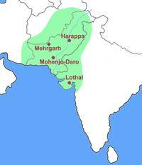
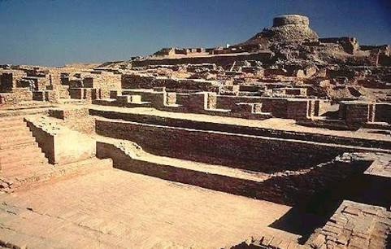
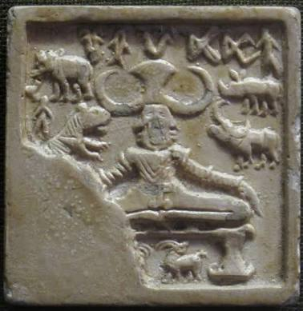
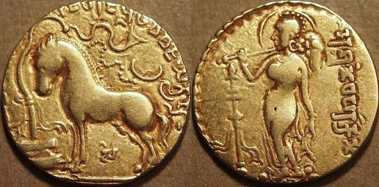

INDUS VALLEY CIVILISATION
- R.B. Dayaram Sahni first discovered Harappa in 1921.
- R.D. Banerjee discovered Mohenjodaro in 1922.
The Harappan Culture belongs to the Bronze Age.

Town Planning
The towns were elaborately planned and followed the grid system. Roads were well cut and divided town into large rectangular blocks. Lamp posts at certain intervals indicates existance of street lightning. Houses were well planned too.
The tows were divided into two parts: Upper Part or Citadel and Lower Part. The Citadel constituted public buildings, granaries,important workshops and religious buildings. The people lived in the Lower Part.
Signs of ritual bathing and public bathing have been found. In Mohanjodaro, The Great Bath has been discovered.
Construction:
People used burnt bricks of good quality as building materials. This shows how advanced they were as contemporary civilizations used mud bricks. Houses were often of two or more storey. They varied in size, but were quite monotonous. No window faced the streets. One of the most important features of Indus Valley Civilisation is the spectacular drainage system.
The Drains were made of mortar and covered with large brick slabs for easy cleaning. This shows their developed sense of health and sanitation.

Agriculture
People grew wheat, barley, rai, peas, sesamum, mustard, rice, cotton, dates, melons etc. The civilisation has been the first to produce cotton. People used wooden
ploughs. They produced enough to feed themselves. The foodgrains were stored in the granaries in Citadel.
Culture

People were very fond of ornaments and dressing up. Ornaments were made of gold, silver, ivory, copper etc. They were worn by both men and women. Cotton fabrics were quite common.
Though people wore woolen in winters. Evidence shows that people in Harappan Culture played dice games.
The people practiced barter system. 16 was the unit of measurement.(16,64,160,320).
Flint tool work, shell work, bamgle making, pottery making etc. were practiced.

Religious Life
Main object of worship was Mother Goddess. The upper class preferred a god, nude with two horns, much similar to Pashupati Shiva. Represented on the seal is a three
horned head in yogic posture. Pashupatinath represents male deity. Phallus worship was also prevalent.
Dead bodies were placed n a north-south orientation.
End
The Harappan Civilization lasted for 1000 years. Invasion of Aryans, social breakup of Harappans, earthquakes etc. are listed as possible causes.